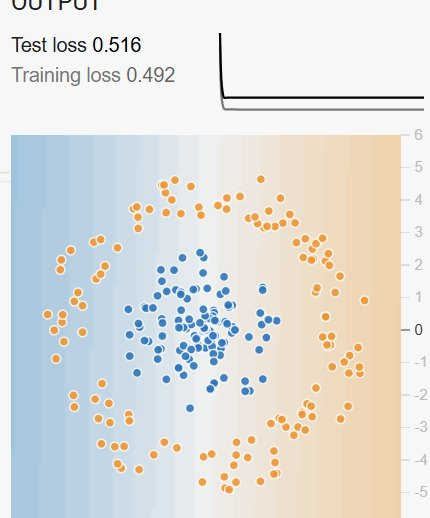
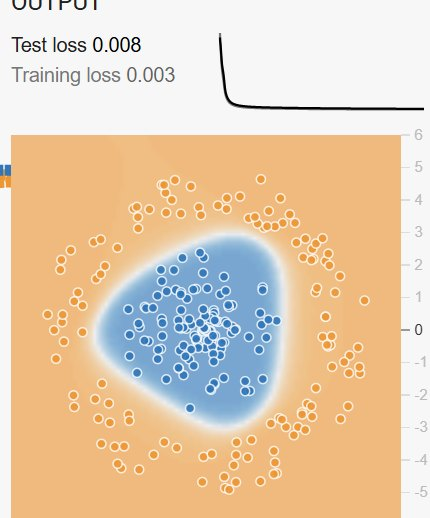
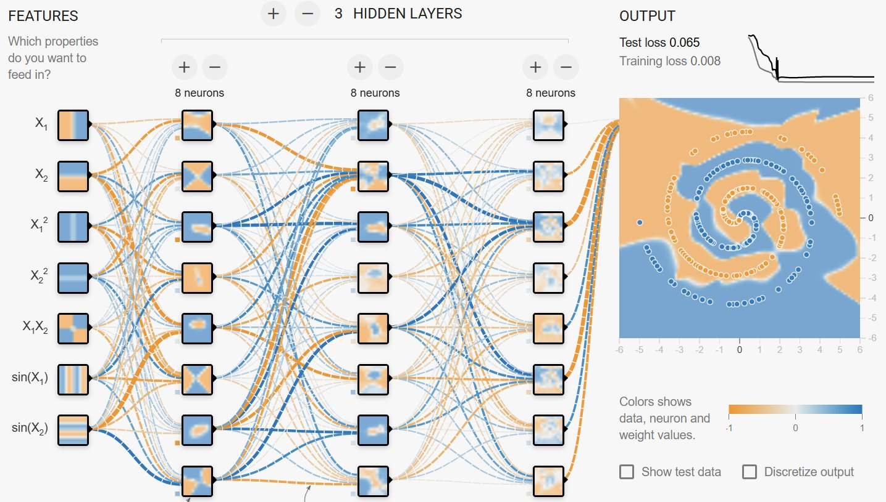
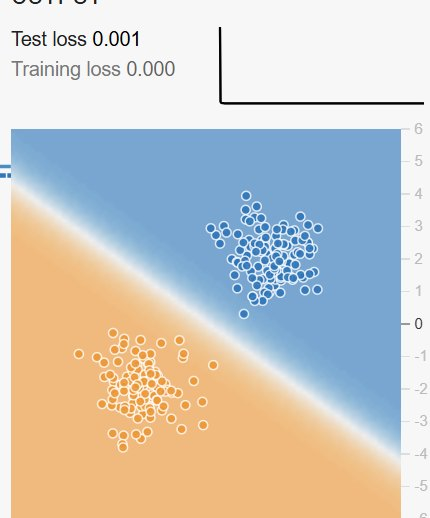
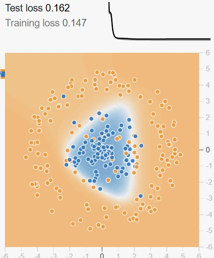
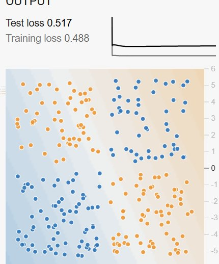
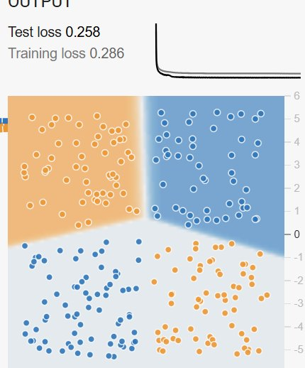
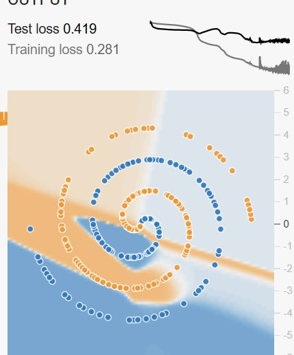
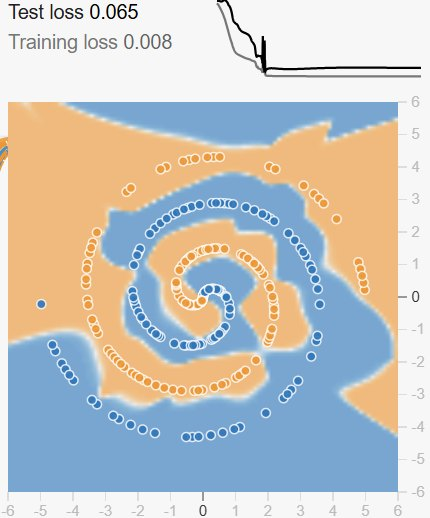
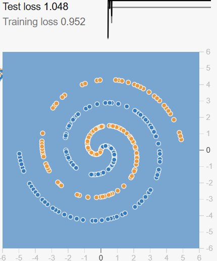

Artifact 02 · Deep Learning Foundations
Inside a Neural Network
Six components, one learning loop, and what I saw when I trained my own models in the TensorFlow Playground.
The big picture
How data flows through a network
Raw features enter here, like the X1 and X2 coordinates of each dot in the Playground.
Each neuron weighs its inputs, adds a bias, and applies an activation. Deeper layers build on the patterns found by earlier ones.
Turns the last hidden signals into a prediction, such as orange or blue.
The moving dots show the forward pass: information only travels left to right when the network makes a prediction.
Component 1
Layers
A layer is a group of neurons that all receive the same inputs and pass their outputs to the next group together. Every network has an input layer, an output layer, and usually one or more hidden layers in between.
- Depth (number of layers) lets the network combine simple patterns into more complex ones.
- Width (neurons per layer) controls how many patterns each stage can track at once.
- Without hidden layers, a network can only draw a straight dividing line.


Component 2
Neurons
A neuron is the basic unit of computation. It does three small things:
- Multiplies each input by its own weight.
- Adds everything up along with a bias.
- Passes the total through an activation function to produce its output.
a = f(z)
One neuron on its own is just a weighted vote. The power comes from stacking many of them so each layer works with the outputs of the last.
Component 3
Weights and biases
Weights are the numbers on every connection. They decide how strongly one neuron's output affects the next, and a bias shifts a neuron's starting point. Together they are the network's parameters, and they are the only thing that changes during training.
- Weights start out random and are adjusted a little after every batch.
- A large positive or negative weight means a strong influence.
- More layers and neurons means far more weights to learn.

Component 4
Activation functions
An activation function decides how strongly a neuron fires. Its real job is adding nonlinearity. Without it, stacking layers is pointless, because any number of linear layers still collapses into one straight line.
Component 5
Loss functions
A loss function scores how wrong the network's predictions are, as a single number. Lower is better, and training is the search for weights that push it down.
Punishes confident wrong answers much harder than unsure ones.
Component 6
Optimization algorithms
The optimizer decides how to change each weight to lower the loss. The classic method is gradient descent: find the slope of the loss for each weight, then take a step downhill.
The learning rate η sets the step size. Stochastic gradient descent updates after each mini batch (the Playground uses batches of 10), and newer optimizers like Adam adapt the step size for every weight automatically.
Putting it together
How the six components work as one loop
No component works alone. Layers, neurons, weights, and activations produce a prediction. The loss function scores it. Backpropagation uses the chain rule to work out how much each weight contributed to the error, and the optimizer nudges every weight in the direction that lowers the loss.
The epoch counter in the Playground is this loop. My runs went from about 300 to 2,500 epochs, and the loss curve in the corner is the loss step of every cycle, plotted over time.
My experiments · TensorFlow Playground
Structure and data: what changed the results

Simple data needs no hidden layer.
A straight line cannot wrap a circle.
Hidden neurons bend the boundary.

Messy data raises the floor on loss.
All runs used a learning rate of 0.03, Tanh activation, a batch size of 10, and a 50/50 training and test split unless noted.
My experiments · TensorFlow Playground
Activation, capacity, and learning rate

No curve, no progress.

Bends, but only partly.

Too small to follow the spiral.

Enough capacity to fit it.

Steps too big, training breaks.
Colors follow the Playground: the background shows what the model predicts at every point, and the dots are the real data.
Summary
Why visualizing neural networks matters
Why the visuals help
- Neural networks are usually treated as black boxes. Seeing weights, neurons, and boundaries makes their behavior something you can reason about.
- A loss number alone hides overfitting and unstable training. A curve and a decision boundary show it right away.
- Visuals make the ideas explainable to people who will never read the math, which is how trust in AI gets built.
Key insights from this exercise
- Structure has to match the problem. Blobs needed no hidden layer; the spiral needed three.
- Nonlinearity is the whole point. Linear activation could not solve XOR at any depth.
- Bigger is not free. Nine times the parameters meant more compute and a growing overfitting gap.
- The learning rate can break everything. Going from 0.03 to 3 turned a working model into one that predicted a single color.
Sources
References
Goodfellow, I., Bengio, Y., & Courville, A. (2016). Deep learning. MIT Press. https://www.deeplearningbook.org
Kingma, D. P., & Ba, J. (2015). Adam: A method for stochastic optimization [Conference paper]. 3rd International Conference on Learning Representations. https://doi.org/10.48550/arXiv.1412.6980
LeCun, Y., Bengio, Y., & Hinton, G. (2015). Deep learning. Nature, 521(7553), 436-444. https://doi.org/10.1038/nature14539
Nair, V., & Hinton, G. E. (2010). Rectified linear units improve restricted Boltzmann machines. In Proceedings of the 27th International Conference on Machine Learning (pp. 807-814). Omnipress.
Rumelhart, D. E., Hinton, G. E., & Williams, R. J. (1986). Learning representations by back-propagating errors. Nature, 323(6088), 533-536. https://doi.org/10.1038/323533a0
Smilkov, D., & Carter, S. (n.d.). A neural network playground [Interactive web application]. TensorFlow. Retrieved November 8, 2026, from https://playground.tensorflow.org
All Playground screenshots are from my own training runs. Diagrams and charts on these slides were built for this deck.